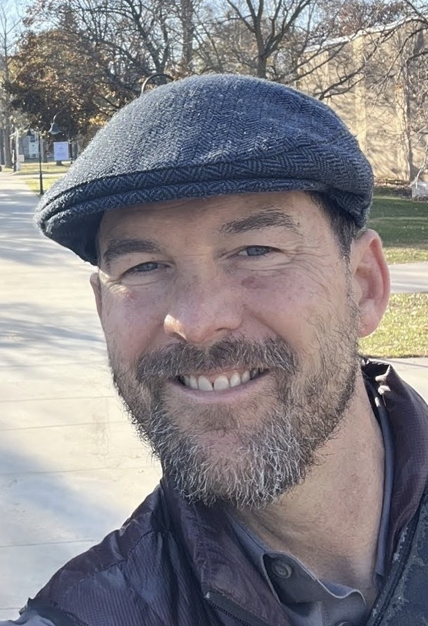

Matty Wegehaupt

Translator, teacher and Fulbright Fellow · Appleton, Wisconsin
Biography, translations and contact
Matty Wegehaupt has spent over two decades working inside Korean language and culture — not observing from the outside, but translating Buddhist masters, editing academic journals, and teaching the next generation about East Asia.
A former U.S. Air Force Academy cadet turned Fulbright Fellow in South Korea, he has taught East Asian Studies at Lawrence University since 2007, covering courses from Chinese cinema to Korean history in literature and film.
Selected translations
- Beopjeong Sunim. Pure and Fragrant. Seoul: Jogye Order of Korean Buddhism, 2021.
- Hyecho. Memoir of the Pilgrimage to the Five Kingdoms of India. In Collected History of Korean Buddhist Thought. Seoul: Jogye Order, 2010.
- Beopjeong Sunim. May All Beings Be Happy. Seoul: Johwaroun Salm, 2006.
- Korean Massive Open Online Courses (2022–2025): Buddhism and Business, Buddhism and Literature, Buddhism and Ethics, and more.
Education
- MA, Asian Studies — University of Michigan, Ann Arbor
- MA, Asian Studies — University of California, Berkeley (with honors)
- BA, Political Science — University of Wisconsin, Madison (with honors)
- United States Air Force Academy (1989–1991)
Selected service
- Managing Editor, Journal of Korean Religion (2008–2018)
- Managing Editor, Seoul Journal of Korean Studies (2007–2008)
- United States Fulbright Fellow, South Korea (2006–2007)